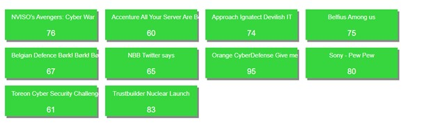
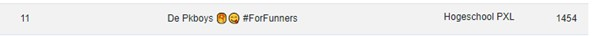

Origineel was er vanuit de Hogeschool PXL een hackathon aangeboden, maar die is door corona niet door kunnen gaan. Hierdoor werd er gevraagd aan de studenten van Systeem- en netwerkbeheer om deel te nemen aan de Cyber Security Challenge Belgium 2021. Ik had mezelf al een paar maanden eerder ingeschreven vermits ik dit al uit eigen initiatief wou doen met een paar vrienden.
De Cyber Security Challenge Belgium is een competitie dat al meerdere jaren bestaat. Deze competitie is uitzonderlijk voor studenten van een Belgische hogeschool of universiteit. Het formaat van de competitie bestaat in de kwalificatie uit een ‘capture the flag’ formaat. In de pre-finals is het een combinatie van ‘capture the flag’ en social engineering. De finals is een combinatie van ‘capture the flag’ en expert challenges. De uitdagingen die aangeboden worden tijdens een ‘capture the flag’ ronde bestaan uit verschillende onderdelen zoals: cryptografie, web, reverse engineering, pown, forensics, ..
Het hoofddoel van deze hackathon is om ervaring op te doen op een plezante manier. Deze hackathon bestaat reeds enkele jaren en heeft daardoor een paar grote sponsors. Hierdoor zijn er prijzen te winnen zoals een reis naar Las Vegas, enkele waardebonnen en leuke gadgets.
Mijn avontuur begon op 9 maart in de ochtend samen met mijn groepsgenoten. Ons team genaamd ‚ÄúDe Pkboys ü•ûüòã #ForFunners‚Äù bestond uit: Joris Guffens, Arno De schepper, Thimo Dewel en mezelf. Zoals onze hashtag aangeeft, waren we hier gekomen voor het plezier. We dachten namelijk dat het moeilijk ging worden om te kwalificeren vermits dit onze eerste hackathon was. In totaal waren er 225 teams die zich hadden ingeschreven.
Tijdens de kwalificatie waren we op de 20ste plek geëindigd met 500 punten. Dit was meteen een goed teken.
Normaal gezien zouden degene die in top 60 waren doorgaan naar het offline evenement dat gewoonlijk doorgaat in Brussel. De top 12 mocht ook meteen doorgaan naar de finals, terwijl de rest zich nog moest kwalificeren via de pre-finals. Door de onvoorziene omstandigheden verliep dit gebeuren online op het ‘Gather.town’ platform. Dit is een sociaal platform waar iedereen zijn eigen poppetje heeft om mee rond te lopen. De pre-finals speelde zich af op dit platform en de challenges waren volledig geïntegreerd in de ‘Town’. Dit was een leuk alternatief tegenover de gewone gang van zaken en verliep ook vlekkeloos. De challenges tijdens de pre-finals waren voornamelijk gericht op cryptografie en stenografie. Ook was er een onderdeel van social engineering waarbij we de werknemers van de bedrijven die de Cyber Security Challenge sponsoren moesten social engineeren voor punten te verdienen. We wisten ons samen met de reeds gekwalificeerde teams in de finals te plaatsen.
De finals waren weer volledig in ‘capture the flag’ stijl. Deze uitdagingen waren meteen een niveau hoger dan de uitdagingen bij de kwalificatieronde. Het viel me meteen op dat er veel teams moeite hadden met het oplossen van deze uitdagingen. In het laatste uur werd het scoreboard weggehaald, waardoor het onmogelijk was om te weten of we de top 12 hadden gehaald. Uiteindelijk waren we nipt door naar de laatste ronde met een tiende plaats.
De laatste dag was voorzien van een aantal expert challenges. Ik wist niet meteen wat mij te wachten stond. Eerst dacht ik dat het zoals de vorige rondes ‘capture the flag’ ging zijn, maar het waren vooral uitdagingen rond de sponsors waarbij we door middel van overleg een oplossing moesten bedenken.
Op het einde van de dag waren we uiteindelijk met 1 plaats gezakt, waardoor we op de 11de plaats zijn beland over heel de competitie.
 We waren aan de Cyber Security Challenge begonnen met een mindset om iets bij te leren, maar niet om voor de winst te gaan. Het hoofddoel van een hackathon is uiteindelijk om op een korte periode veel ervaring op te doen. Binnen onze groep had nog niemand van ons een hackathon gedaan, waardoor we een beetje in het donkere zaten op vlak van wat we konden verwachten. Aan de start hadden we afgesproken om zoveel mogelijk challenges alleen aan te pakken totdat we allemaal vastzaten. Deze aanpak heeft ons in het begin enorm veel punten opgeleverd. Alle uitdagingen die geleverd worden door de Cyber Security Challenge zijn uniek en vereisen daarom ongeacht ervaring opzoekwerk. Om een moeilijkere uitdaging tot een goed einde te brengen is een goede methodiek van belang en is samenwerking vereist. Ons mooi resultaat getuigt dat we dit goed hebben aangepakt.
Mijn taak binnen onze groep was vooral gericht op het oplossen van opdrachten die te maken hadden met OSINT en steganografie. Uiteraard heb ik mezelf ook verdiept in andere onderdelen om ervaring op te doen, maar de voorgenoemde onderdelen zijn mijn sterkste punten.
Bij het uitvoeren van mijn taken heb ik al mijn onderzoek gedocumenteerd samen met mijn ondernomen stappen. Dit deed ik zodanig dat ik mijn progressie kon delen met mijn groepsgenoten in het geval dat ik ergens moeite mee had. Door middel van pair programming hebben we een aantal extra punten kunnen scoren.
Met een 11de plaats hebben we niet enkel een mooi resultaat neergezet, maar hebben we ook een aantal prijzen gewonnen zoals een VIP subscriptie op HTB en webinars die we gratis kunnen meevolgen.
Terugblikkend op dit evenement hebben we ongeacht de verplichting van de school dit op eigen initiatief uitgevoerd. Samen met onze kennis die we vergaard hebben tijdens opleidingsonderdelen en onze passie voor cybersecurity hebben we er het beste van gemaakt. Naar volgende hackathons toe kunnen we werken aan de onderdelen waar we minder goed in waren zoals pown, reverse engineering.
Deze opdracht heb ik gekozen om te bespreken omdat het één van mijn hoofdinteresses is binnen informatica en ik zeker trots ben op het behaald resultaat.